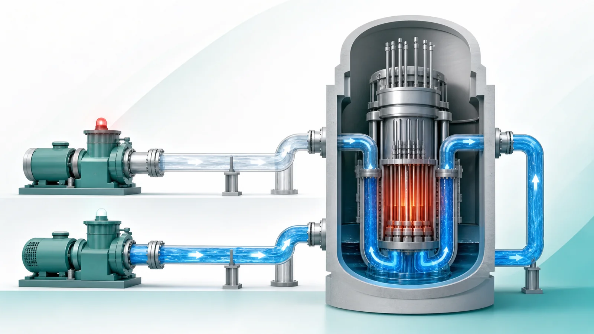
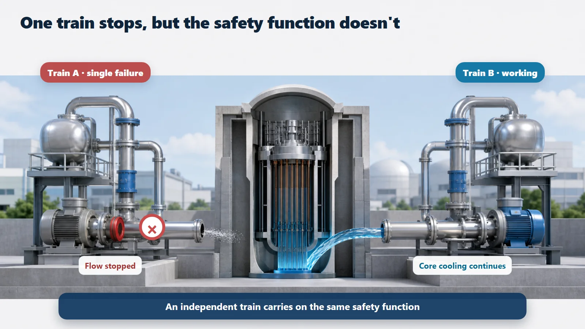
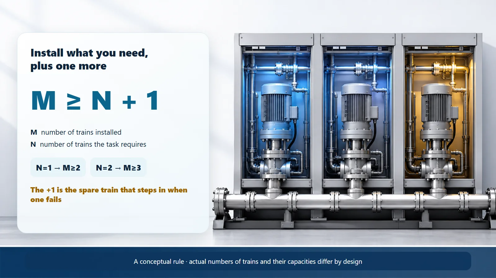

Safety Principles & Accident Analysis · 204
Lose a Player, Still Win the Match — The Single Failure Criterion in Nuclear Plants
Instead of assuming nothing breaks, nuclear design assumes the worst single failure happens during an accident, and keeps a spare train ready on the bench.

The single failure criterion is a design rule: equipment responsible for a safety function must still perform that function even if any one component suddenly stops doing its job. It assumes the worst single failure, at the same moment as an accident, and it is the reason safety systems are built with at least one spare train: M ≥ N + 1.
Picture a soccer team arriving for a final with exactly eleven players and nobody on the bench. The moment the goalkeeper twists an ankle, the team falls apart. That's why no serious team goes into a big match without reserves, and the safety equipment of a nuclear power plant starts from exactly the same worry.
Not "nothing will fail" but "assume one thing does"
We'd normally say, "use good parts so nothing breaks." But even the best pump, valve or power supply can fail at some point, possibly during an accident, exactly when the safety equipment is needed most. So nuclear engineering goes the other way: assume from the start that one component will fail, and make sure everything still works. It doesn't deny failure; it calmly accepts it and prepares for it.
The worst player to lose, at the worst moment
Two tough conditions come attached. First, it assumes the single most painful failure: the component whose loss would hurt most. Second, it assumes the failure happens at the very moment an accident occurs, when the safety function has to work hardest.
A single failure also counts everything that stops along with it. If one power supply is lost, the pumps and valves fed by it stop in a chain; that is treated as one single failure, not several. So the backup train must be kept separate from the start.
The only way to pass this test is to have two or more sets of equipment that can do the same job: redundancy. That is the fundamental reason safety injection, auxiliary feedwater and emergency power are usually split into several trains (independent, parallel sets of equipment).

How many on the bench? A very simple count
Number of trains installed M ≥ number of trains required N + 1. If N trains are needed for the job, you install one more. That "+1" is the substitute on the bench, so that even if one drops out, as many as you need are left.
| Trains required (N) | Minimum trains installed (M) | After one single failure |
|---|---|---|
| 1 | 2 | 1 left, enough |
| 2 | 3 | 2 left, enough |
Real plants differ in how capacity is split (for example two trains of 100% each, or three of 50% each), so this is a conceptual rule rather than a figure for any specific unit.

Lots of substitutes doesn't solve everything
No matter how long the bench, if the whole team eats the same spoiled takeout and gets sick at once, every substitution card is useless. When a single cause brings down several trains at the same time, it is a common cause failure.
The single failure criterion assumes only one random failure, so it can't block common causes on its own. Plants therefore also mix in equipment that works on different principles (diversity) and keep equipment physically and electrically apart (independence).
A bonus: it helps during maintenance too
To inspect and maintain equipment, one train sometimes has to be taken out of service. Because there's a spare, the remaining trains keep the safety function covered meanwhile, like a coach resting a starter while a bench player fills in.
Today's takeaways
- The single failure criterion means: assume one component fails, and still perform the safety function.
- The assumption is deliberately tough: the worst single failure, at the same moment as an accident.
- It forces two or more trains doing the same job: what you need plus one (M ≥ N + 1).
- Common cause failures need diversity and independence on top of this rule.
- It is the basic key to why nuclear plants keep spares for every safety function.